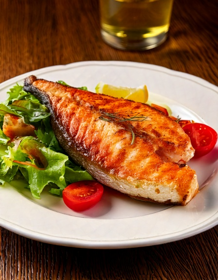

Fresh na Lake Titicaca-style na trout, pan-seared na may bawang at lime -- real na Bolivian highland cooking, light at mabilis.
Nutrition (bawat serving)
290
Calories
6g
Carbs
34g
Protina
15g
Fat
2g
Fiber
~5
Est. GI
Bakit bagay ito sa diabetes-friendly na diyeta
Ang trout ay lean, omega-3-rich na isda na halos walang carbs, kaya ang simple na pan-seared na fillet ay halos walang epekto sa blood sugar. Ang pag-pair nito sa fresh salad sa halip na kanin o fried potato ay pinapanatili ang buong plato na malapit sa zero glycemic impact.
Mga Sangkap
- 44 trout fillets
- 3 cloves3 cloves bawang, tinadtad
- 3 tbsp45 ml fresh lime juice
- 2 tbsp30 ml olive oil
- 6 cups6 cups mixed salad greens
- 11 kamatis, hiniwa
Paraan ng Paggawa
- I-marinate ang trout fillets sa bawang, kalahati ng lime juice, asin, at paminta ng 10 minuto.
- Painitin ang olive oil sa pan sa medium-high heat at i-sear ang trout na paibaba muna ang balat, 3-4 minuto bawat side, hanggang golden at cooked through.
- Haluin ang salad greens at kamatis kasama ang natitirang lime juice.
- I-serve ang trout na mainit kasama ang fresh salad.
Sa GlucoBeacon
Isa ito sa mga real na Bolivian recipe ng GlucoBeacon, bahagi ng lumalaking regional recipe collection na ginawa para sa real diabetes-friendly na meal planning. I-download ang GlucoBeacon sa Google Play →